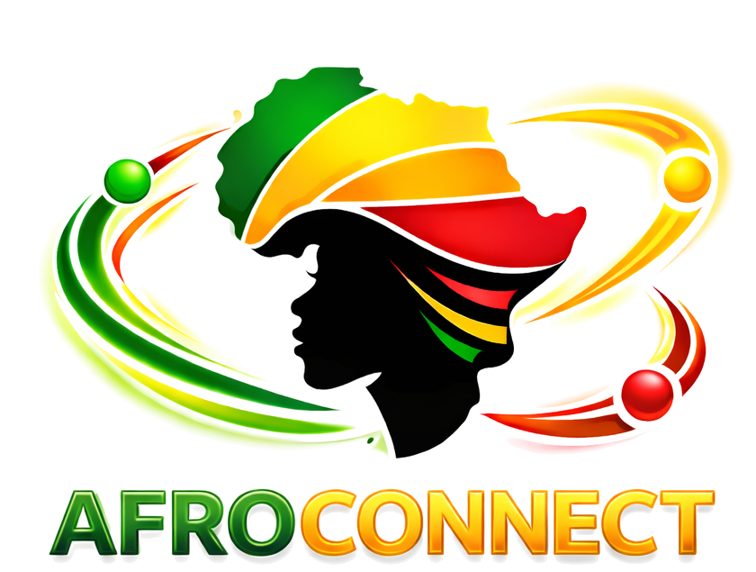

Couverture
Étendre l'accès vers les zones peu ou mal desservies.

Nous contacterAfroConnect développe et déploie des solutions de connectivité adaptées aux territoires où l’accès à Internet reste limité.
Notre mission est de rapprocher Internet des personnes et des activités, y compris dans les territoires où le déploiement est plus complexe.
AfroConnect conçoit ses solutions en tenant compte des contraintes de terrain : distance, accessibilité, environnement et besoins locaux.
Étendre l'accès vers les zones peu ou mal desservies.
Adapter les solutions aux réalités de chaque territoire.
Comprendre les besoins des utilisateurs et des professionnels.
Une offre pensée autour de la connectivité, des réseaux et des usages.
Des solutions d'accès adaptées aux besoins des particuliers, entreprises et organisations.
Déploiement de solutions Wi-Fi pour des espaces privés, professionnels ou publics.
Conception et déploiement d'infrastructures réseau adaptées aux contraintes du terrain.
Une approche adaptée aux besoins spécifiques des zones difficiles d'accès.
Nous privilégions une approche basée sur l'étude du terrain, la technologie disponible et les besoins réels des utilisateurs.
Une plateforme développée pour faciliter la gestion des accès Wi-Fi, des utilisateurs et des forfaits.
Parlons de votre zone, de vos besoins et de la solution adaptée.